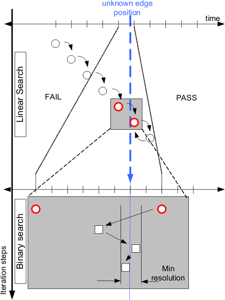

Search algorithms to find signal transitions
To find the unknown timing position of an edge often a linear search followed by a binary search is used.
To find the transitions of a signal you must apply a search algorithm that is optimized for speed and resolution. If you would just hunt for resolution you could use a linear search and make the search steps very fine. But this would cost a lot of time, because you need many iterations most of the time. The same applies if you just use a binary search. To find the edge you have to make sure the first iteration step encloses it. This means, you must begin the search with a large start interval. Combining the two and using a coarse step size for the linear and a fine step size for the binary search often provides granularity and speed.
Example
The upper half of the figure below illustrates the coarse linear search, while the bottom half illustrates the fine binary search.
